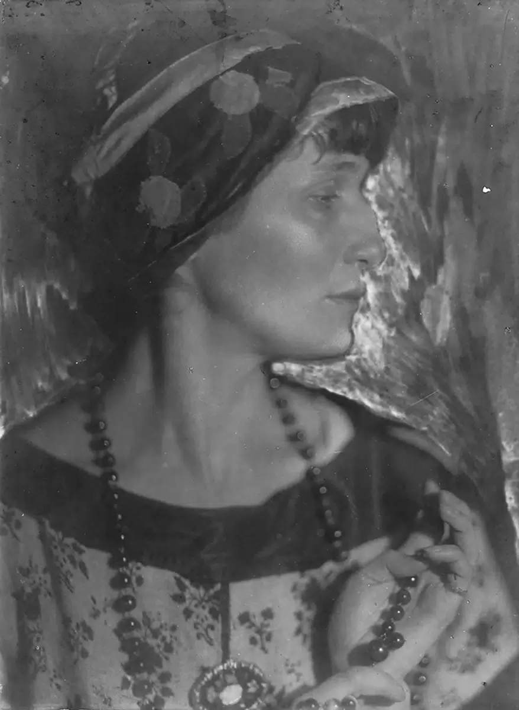
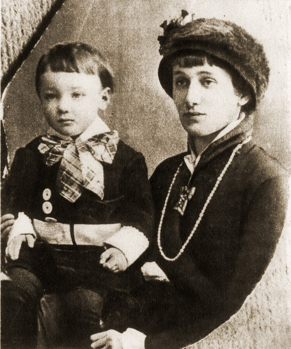

Хроника жизни: 1889–1966
Анна Андреевна Горенко родилась 11 июня (23 июня по новому стилю) 1889 года в Одессе. Её отец, Андрей Антонович Горенко, был потомственным дворянином и инженером-механиком флота. Мать, Инна Эразмовна Стогова, происходила из семьи, связанной с литературой (её брат был поэтом). Вскоре после рождения Анны семья переехала в Царское Село под Санкт-Петербургом. Здесь прошло детство поэтессы. Царское Село было тесно связано с именем Александра Пушкина, что оказало влияние на формирование вкусов Ахматовой. Первые стихи она написала в 11 лет.
Псевдоним «Ахматова» Анна взяла по настоянию отца, который не хотел, чтобы его фамилия прославилась в «сомнительных» литературных кругах. Происхождение псевдонима связывают с татарским ханом Ахматом, предком Горенко. Первый сборник стихов «Вечер» вышел в 1912 году тиражом 300 экземпляров. Критики (в том числе Николай Гумилёв, её первый муж) приняли его благосклонно. Второй сборник, «Чётки» (1914), принёс Ахматовой всероссийскую известность. Он переиздавался восемь раз за два года. Третий сборник, «Белая стая», вышел в 1917 году, в год Октябрьской революции, и был проникнут предчувствием катастрофы.
После прихода к власти большевиков многие литераторы эмигрировали. Ахматова осталась. Её решение зафиксировано в стихотворении «Мне голос был» (1917). В 1921 году был расстрелян Николай Гумилёв, обвинённый в участии в контрреволюционном заговоре (так называемое «Таганцевское дело»). Смерть мужа стала первой большой личной трагедией Ахматовой. В 1920-е годы Ахматову печатали всё реже. Её стихи считались «несоветскими», слишком личными, не соответствующими требованиям социалистического реализма. С 1925 по 1939 год она практически не публиковалась в СССР, зарабатывая на жизнь переводами с французского, итальянского и других языков (переводила Бальзака, Стендаля, Кафку).
1935 год — первый арест сына Ахматовой, Льва Гумилёва (1912–1992). Он был студентом Ленинградского университета и занимался историей. Поводом для ареста стало «дело» его отца, Николая Гумилёва. Лев Гумилёв был освобождён через несколько месяцев, но в 1938 году арестован вновь и приговорён к пяти годам лагерей. В общей сложности он провёл в лагерях и ссылках около десяти лет. С 1935 по 1940 год Ахматова провела 17 месяцев в очередях ленинградских тюрем «Кресты», куда носила передачи сыну. Именно этот опыт лёг в основу поэмы «Реквием». Текст поэмы нельзя было записывать — Ахматова держала его в памяти, а несколько друзей заучивали строки наизусть, чтобы сохранить. Рукописи сжигались после прочтения. Впервые «Реквием» был полностью опубликован на Западе в 1960-е годы, в СССР — только в 1987 году (журнал «Огонёк»).
В начале Великой Отечественной войны Ахматова оставалась в Ленинграде. Она выступала по радио, читала стихи, работала в пожарной команде. В сентябре 1941 года, когда кольцо блокады сомкнулось, её эвакуировали в Москву, а затем в Ташкент. В эвакуации она написала цикл стихов «Ветер войны» и продолжала работу над «Поэмой без героя». 14 августа 1946 года вышло постановление ЦК ВКП(б) «О журналах "Звезда" и "Ленинград"». Последствия: Ахматова исключена из Союза писателей СССР, лишена продовольственных карточек и возможности публиковаться. Единственный доход — переводы. Её стихи не печатали до 1950-х годов.
В 1964 году Ахматова получила итальянскую литературную премию «Этна-Таормина». В 1965 году ей была присуждена степень почётного доктора литературы Оксфордского университета. Это было первое официальное признание её творчества на Западе. Анна Ахматова умерла 5 марта 1966 года в санатории в Домодедово под Москвой. Похоронена в посёлке Комарово под Ленинградом (ныне в черте Санкт-Петербурга). Музей Ахматовой открыт в Фонтанном доме в 1989 году.
Ключевые события жизни Ахматовой и параллели с историей СССР (1917–1966)
| Год | Событие в жизни Ахматовой | Событие в истории СССР |
|---|---|---|
| 1917 | Отказ эмигрировать | Октябрьская революция |
| 1921 | Расстрел мужа Николая Гумилёва | Красный террор |
| 1925–1939 | Отсутствие публикаций, переводы | Ужесточение цензуры, сталинский режим |
| 1935 | Первый арест сына | Начало Большого террора |
| 1935–1940 | Создание поэмы «Реквием» | Массовые репрессии, ГУЛАГ |
| 1938 | Второй арест сына, отправка в лагерь | Пик Большого террора |
| 1941–1944 | Блокада Ленинграда, эвакуация в Ташкент | Великая Отечественная война |
| 1946 | Постановление ЦК, исключение из Союза писателей | Начало кампании против «безродных космополитов» |
| 1956 | Освобождение сына из лагеря | Начало хрущёвской «оттепели» |
| 1964 | Премия «Этна-Таормина» (Италия) | Частичная реабилитация, культурные контакты с Западом |
| 1965 | Почётный доктор Оксфордского университета | — |
| 1966 | Смерть в Комарово | — |

